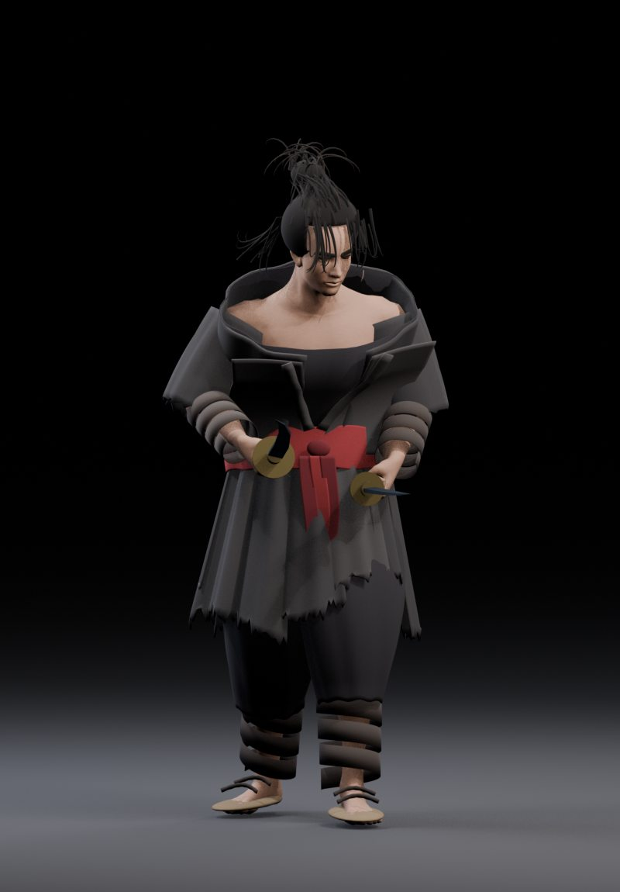
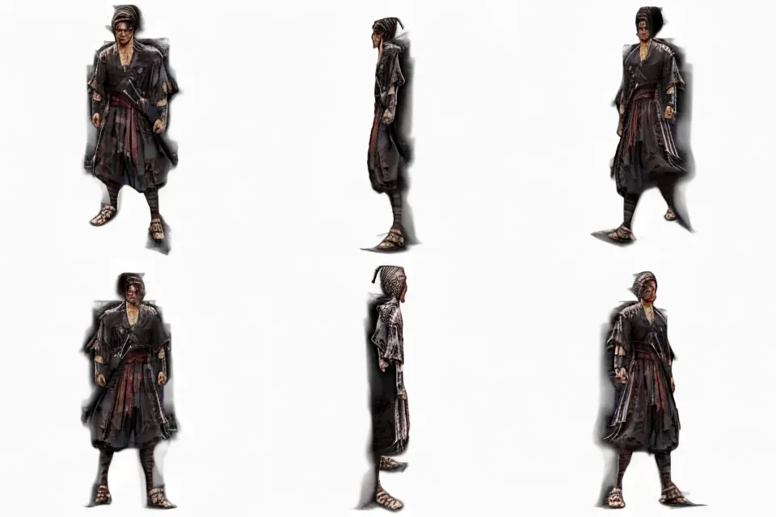

3D 캐릭터 생성 실패 — 목표 품질 미달
InstantMesh의 2D 다중시점 생성까지만 성공했습니다. 실제 3D 생성 단계에서 무료 ZeroGPU 사용 한도가 종료되어 Blender에 넣을 수 있는 GLB는 없습니다. 아래 6방향 이미지를 3D 모델로 오인하면 안 됩니다.
입력 이미지 — 목표 시트의 정면 추출
이전 임시 3D 모델 — 불합격

InstantMesh 생성 다중시점 (2D 이미지)

붉은 띠·검은 의상 등 특징을 일부 유지했지만 머리 형태, 의상 비율, 손과 발 및 뒷면이 원화와 달라졌습니다. 검의 형상도 재현되지 않았습니다.
서비스별 결과
TRELLIS.2: 생성 GPU 사용 한도 초과 → 3D 생성 실패
Stable Fast 3D: 원격 서버 내부 오류 → 3D 생성 실패
InstantMesh: 다중 시점 2D 생성 성공, GLB 변환 GPU 한도 소진 → 3D 생성 실패
외부 생성 서비스의 계정 인증 또는 사용 가능한 크레딧이 확보되어야 GLB 생성 작업을 재시도할 수 있습니다. 비용이 발생하는 작업은 임의로 진행하지 않았습니다.